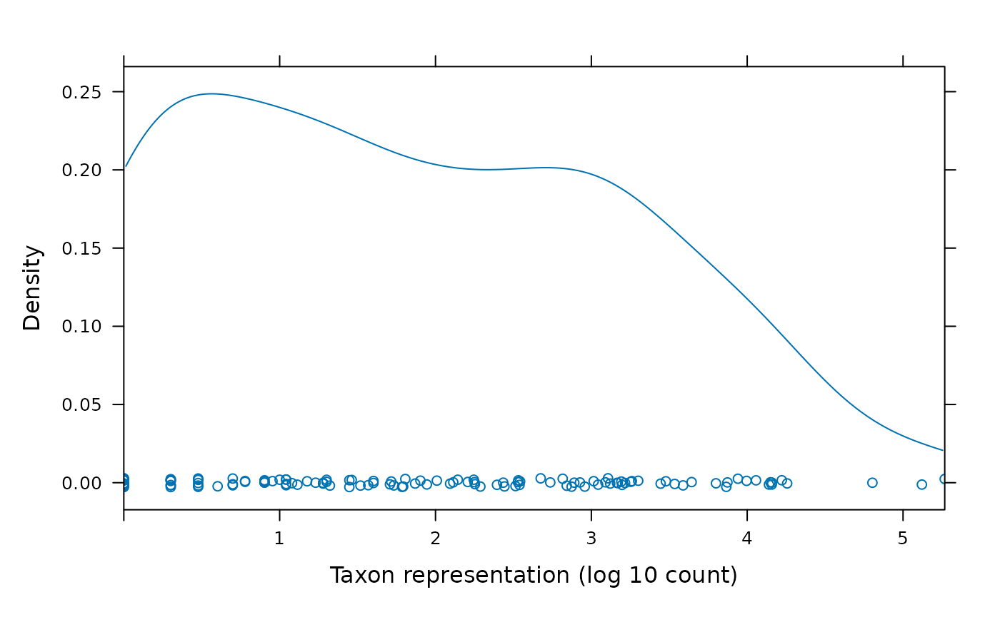
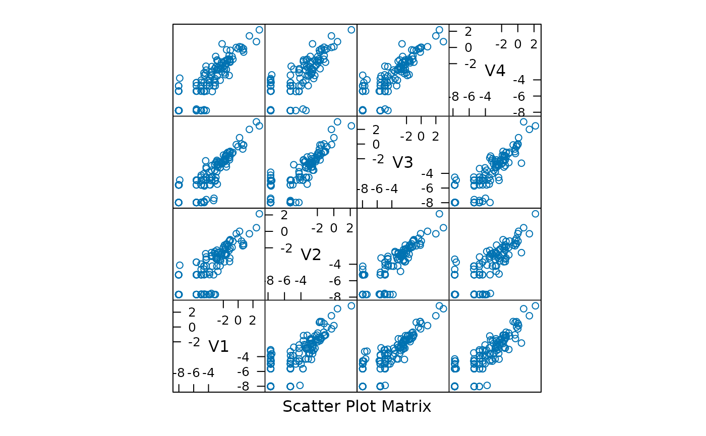
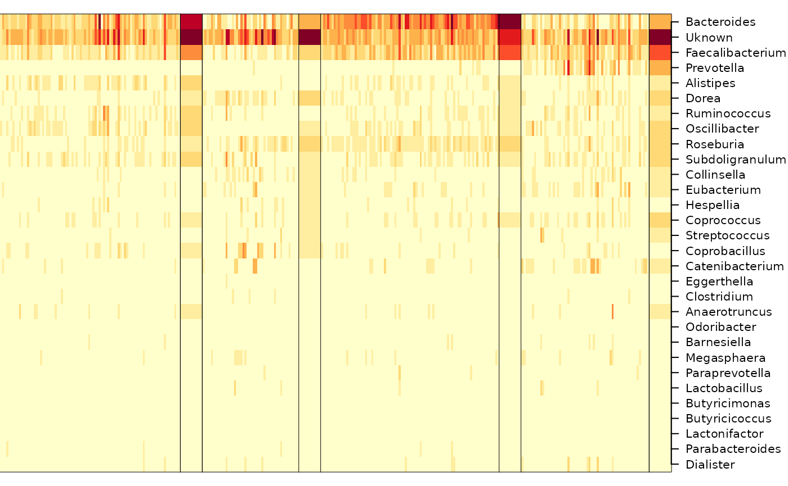
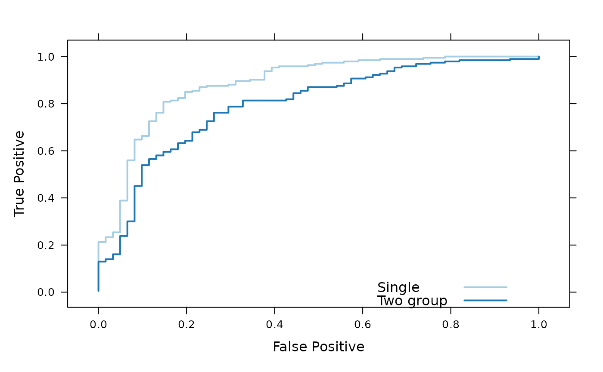

DirichletMultinomial for Clustering and Classification of Microbiome Data
Martin Morgan
Roswell Park Comprehensive Cancer Center, Buffalo, NY19 October 2024
Source:vignettes/DirichletMultinomial.Rmd
DirichletMultinomial.RmdModified: 6 March 2012, 19 October 2024 (HTML version)
This document illustrates the main features of the DirichletMultinomial package, and in the process replicates key tables and figures from Holmes et al., https://doi.org/10.1371/journal.pone.0030126.
We start by loading the package, in addition to the packages lattice (for visualization) and parallel (for use of multiple cores during cross-validation).
library(DirichletMultinomial)
library(lattice)
library(parallel)We set the width of R output to 70
characters, and the number of floating point digits displayed to two.
The full flag is set to FALSE, so that cached
values are used instead of re-computing during production of this
vignette. The package defines a set of standard colors; we use
.qualitative during visualization.
options(width=70, digits=2)
full <- FALSE
.qualitative <- DirichletMultinomial:::.qualitativeData
The data used in Homes et al. is included in the package. We read the
data in to a matrix count of samples by taxa.
fl <- system.file(package="DirichletMultinomial", "extdata", "Twins.csv")
count <- t(as.matrix(read.csv(fl, row.names=1)))
count[1:5, 1:3]
#> Acetanaerobacterium Acetivibrio Acetobacterium
#> TS1.2 0 0 0
#> TS10.2 0 0 0
#> TS100.2 0 0 0
#> TS100 1 0 0
#> TS101.2 0 0 0The figure below shows the distribution of reads from each taxon, on a log scale.
cnts <- log10(colSums(count))
densityplot(
cnts, xlim=range(cnts),
xlab="Taxon representation (log 10 count)"
)
Clustering
The dmn function fits a Dirichlet-Multinomial model,
taking as input the count data and a parameter
representing the number of Dirichlet components to model. Here we fit
the count data to values of
from 1 to 7, displaying the result for
.
A sense of the model return value is provided by the documentation for
the R object fit,
class ? DMN.
if (full) {
fit <- mclapply(1:7, dmn, count=count, verbose=TRUE)
save(fit, file=file.path(tempdir(), "fit.rda"))
} else data(fit)
fit[[4]]
#> class: DMN
#> k: 4
#> samples x taxa: 278 x 130
#> Laplace: 38781 BIC: 40425 AIC: 39477The return value can be queried for measures of fit (Laplace, AIC, BIC); these are plotted for different in The figure. The best fit is for distinct Dirichlet components.
lplc <- sapply(fit, laplace)
plot(lplc, type="b", xlab="Number of Dirichlet Components", ylab="Model Fit")
(best <- fit[[which.min(lplc)]])
#> class: DMN
#> k: 4
#> samples x taxa: 278 x 130
#> Laplace: 38781 BIC: 40425 AIC: 39477In addition to laplace goodness of fit can be assessed
with the AIC and BIC functions.
The mixturewt function reports the weight
and homogeneity
(large values are more homogeneous) of the fitted model.
mixture returns a matrix of sample x estimated Dirichlet
components; the argument assign returns a vector of length
equal to the number of samples indicating the component with maximum
value.
mixturewt(best)
#> pi theta
#> 1 0.31 52
#> 2 0.17 19
#> 3 0.30 53
#> 4 0.22 30
head(mixture(best), 3)
#> [,1] [,2] [,3] [,4]
#> TS1.2 1.0e+00 2.1e-11 8.6e-06 3.3e-08
#> TS10.2 3.8e-08 3.3e-04 1.0e+00 2.8e-10
#> TS100.2 7.2e-09 8.8e-01 8.0e-13 1.2e-01The fitted function describes the contribution of each
taxonomic group (each point in the panels of the figure to the Dirichlet
components; the diagonal nature of the points in a panel suggest that
the Dirichlet components are correlated, perhaps reflecting overall
numerical abundance.

The posterior mean difference between the best and single-component Dirichlet multinomial model measures how each component differs from the population average; the sum is a measure of total difference from the mean.
p0 <- fitted(fit[[1]], scale=TRUE) # scale by theta
p4 <- fitted(best, scale=TRUE)
colnames(p4) <- paste("m", 1:4, sep="")
(meandiff <- colSums(abs(p4 - as.vector(p0))))
#> m1 m2 m3 m4
#> 0.26 0.47 0.51 0.34
sum(meandiff)
#> [1] 1.6The table below summarizes taxonomic contributions to each Dirichlet component.
diff <- rowSums(abs(p4 - as.vector(p0)))
o <- order(diff, decreasing=TRUE)
cdiff <- cumsum(diff[o]) / sum(diff)
df <- cbind(Mean=p0[o], p4[o,], diff=diff[o], cdiff)
DT::datatable(df) |>
DT::formatRound(colnames(df), digits = 4)The figure shows samples arranged by Dirichlet component, with samples placed into the component for which they had the largest fitted value.
heatmapdmn(count, fit[[1]], best, 30)
Generative classifier
The following reads in phenotypic information (‘Lean’, ‘Obese’, ‘Overweight’) for each sample.
fl <- system.file(package="DirichletMultinomial", "extdata", "TwinStudy.t")
pheno0 <- scan(fl)
lvls <- c("Lean", "Obese", "Overwt")
pheno <- factor(lvls[pheno0 + 1], levels=lvls)
names(pheno) <- rownames(count)
table(pheno)
#> pheno
#> Lean Obese Overwt
#> 61 193 24Here we subset the count data into sub-counts, one for each phenotype. We retain only the Lean and Obese groups for subsequent analysis.
counts <- lapply(levels(pheno), csubset, count, pheno)
sapply(counts, dim)
#> [,1] [,2] [,3]
#> [1,] 61 193 24
#> [2,] 130 130 130
keep <- c("Lean", "Obese")
count <- count[pheno %in% keep,]
pheno <- factor(pheno[pheno %in% keep], levels=keep)The dmngroup function identifies the best (minimum
Laplace score) Dirichlet-multinomial model for each group.
if (full) {
bestgrp <- dmngroup(
count, pheno, k=1:5, verbose=TRUE, mc.preschedule=FALSE
)
save(bestgrp, file=file.path(tempdir(), "bestgrp.rda"))
} else data(bestgrp)The Lean group is described by a model with one component, the Obese
group by a model with three components. Three of the four Dirichlet
components of the original single group (best) model are
represented in the Obese group, the other in the Lean group. The total
Laplace score of the two group model is less than of the single-group
model, indicating information gain from considering groups
separately.
bestgrp
#> class: DMNGroup
#> summary:
#> k samples taxa NLE LogDet Laplace BIC AIC
#> Lean 1 61 130 9066 162 9027 9333 9196
#> Obese 3 193 130 26770 407 26613 27801 27162
lapply(bestgrp, mixturewt)
#> $Lean
#> pi theta
#> 1 1 35
#>
#> $Obese
#> pi theta
#> 1 0.53 45
#> 2 0.26 33
#> 3 0.22 18
c(
sapply(bestgrp, laplace),
'Lean+Obese' = sum(sapply(bestgrp, laplace)),
Single = laplace(best)
)
#> Lean Obese Lean+Obese Single
#> 9027 26613 35641 38781The predict function assigns samples to classes; the
confusion matrix shows that the classifier is moderately effective.
xtabs(~pheno + predict(bestgrp, count, assign=TRUE))
#> predict(bestgrp, count, assign = TRUE)
#> pheno Lean Obese
#> Lean 38 23
#> Obese 15 178The cvdmngroup function performs cross-validation. This
is a computationally expensive step.
if (full) {
## full leave-one-out; expensive!
xval <- cvdmngroup(
nrow(count), count, c(Lean=1, Obese=3), pheno,
verbose=TRUE, mc.preschedule=FALSE
)
save(xval, file=file.path(tempdir(), "xval.rda"))
} else data(xval)The figure shows an ROC curve for the single and two-group classifier. The single group classifier is performing better than the two-group classifier.
bst <- roc(pheno[rownames(count)] == "Obese",
predict(bestgrp, count)[,"Obese"])
bst$Label <- "Single"
two <- roc(pheno[rownames(xval)] == "Obese", xval[,"Obese"])
two$Label <- "Two group"
both <- rbind(bst, two)
pars <- list(superpose.line=list(col=.qualitative[1:2], lwd=2))
xyplot(
TruePostive ~ FalsePositive, group=Label, both,
type="l", par.settings=pars,
auto.key=list(lines=TRUE, points=FALSE, x=.6, y=.1),
xlab="False Positive", ylab="True Positive"
)
sessionInfo()
#> R version 4.4.1 (2024-06-14)
#> Platform: x86_64-pc-linux-gnu
#> Running under: Ubuntu 22.04.5 LTS
#>
#> Matrix products: default
#> BLAS: /usr/lib/x86_64-linux-gnu/openblas-pthread/libblas.so.3
#> LAPACK: /usr/lib/x86_64-linux-gnu/openblas-pthread/libopenblasp-r0.3.20.so; LAPACK version 3.10.0
#>
#> locale:
#> [1] LC_CTYPE=C.UTF-8 LC_NUMERIC=C
#> [3] LC_TIME=C.UTF-8 LC_COLLATE=C.UTF-8
#> [5] LC_MONETARY=C.UTF-8 LC_MESSAGES=C.UTF-8
#> [7] LC_PAPER=C.UTF-8 LC_NAME=C
#> [9] LC_ADDRESS=C LC_TELEPHONE=C
#> [11] LC_MEASUREMENT=C.UTF-8 LC_IDENTIFICATION=C
#>
#> time zone: UTC
#> tzcode source: system (glibc)
#>
#> attached base packages:
#> [1] parallel stats4 stats graphics grDevices utils
#> [7] datasets methods base
#>
#> other attached packages:
#> [1] lattice_0.22-6 DirichletMultinomial_1.47.2
#> [3] IRanges_2.38.1 S4Vectors_0.42.1
#> [5] BiocGenerics_0.50.0 BiocStyle_2.32.1
#>
#> loaded via a namespace (and not attached):
#> [1] cli_3.6.3 knitr_1.48 rlang_1.1.4
#> [4] xfun_0.48 highr_0.11 textshaping_0.4.0
#> [7] jsonlite_1.8.9 DT_0.33 htmltools_0.5.8.1
#> [10] ragg_1.3.3 sass_0.4.9 rmarkdown_2.28
#> [13] grid_4.4.1 crosstalk_1.2.1 evaluate_1.0.1
#> [16] jquerylib_0.1.4 fastmap_1.2.0 yaml_2.3.10
#> [19] lifecycle_1.0.4 bookdown_0.41 BiocManager_1.30.25
#> [22] compiler_4.4.1 fs_1.6.4 htmlwidgets_1.6.4
#> [25] systemfonts_1.1.0 digest_0.6.37 R6_2.5.1
#> [28] magrittr_2.0.3 bslib_0.8.0 tools_4.4.1
#> [31] pkgdown_2.1.1 cachem_1.1.0 desc_1.4.3